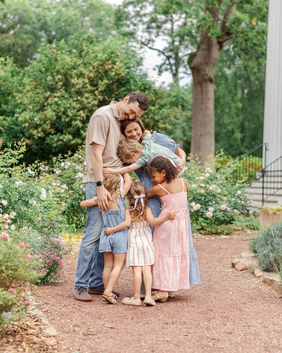

Rhythms & systems
The nighttime reset, mornings, laundry, meals, leaving the house, toy rotation, chores, couple teamwork. The version that works in a real house.
Practical motherhood for a full house
Simple rhythms for a meaningful, manageable home. I'm Lauren — mom to four in 2.5 years — sharing the small systems and mindset shifts that help our full house feel more peaceful.
Read my story
“Four tiny humans call this place home.”
The honest truth
It's a home with enough rhythm, shared responsibility, and grace that the mess doesn't become the whole story.
Life with children is full, noisy, beautiful, and unfinished. I don't want to spend their childhood trying to erase the evidence that they live here. I want rhythms that keep our home from owning us, systems that make room for rest, and habits that teach our children they belong in the work and joy of family life.
I'm not offering a perfect home or a perfect mother. I'm learning, growing, and sharing the small choices that help a full house feel more peaceful and meaningful.
I believe a peaceful home isn't a perfect or quiet one. Around here I share the simple rhythms that help our full house work, the mindset shifts that keep people more important than appearances, and what homeschooling looks like in real life.
The name is personal — a play on Messmer — but it also says the thing I keep coming back to: the home can be unfinished, noisy, and lived-in while the choices inside it are deeply intentional. Systems serve people, never the other way around.
Little by little, one travels far.
What I believe
What I refuse
Jesus > everything. Family > self. Growth > perfection.